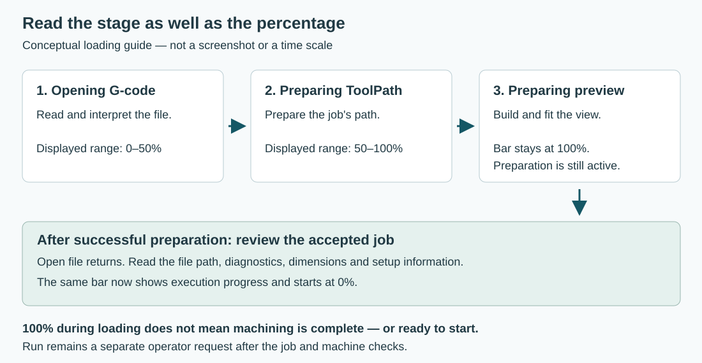

RADONIX · ROUTERXYZ+TC · CHAPTER 14
Operator Manual · English · 8 October 2026
Opening and Checking a Program
Select the intended machining file, wait for preparation to finish, understand the result, and check the prepared job against the actual machine setup before requesting movement.
Expanded draft for review. Opening a program does not start it. Acceptance by the application is one preparation step; the operator must still verify the job, tooling, workholding and movement clearance.
14.1 Understand what opening a machining program does
A machining program is a file containing the instructions for a job. It can describe where the tool should travel, how fast it should move, which tool is needed and when the spindle or other supported equipment should operate. You do not need to write these instructions to load a prepared job, but you do need to identify the correct file and understand what the application has done with it.
In this chapter, “program” means the job file, usually called a G-code program. It does not mean the control programs that manage machine equipment in the background. A drawing or a photograph of the finished part is also not the same thing as a machining program. The person preparing the job normally uses the drawing, tool choices and machining method to produce a file suitable for this controller and machine.
Opening is a preparation operation
When you select a file, the application reads its text, interprets the supported instructions, prepares the corresponding path and creates the source and graphical views. This lets you examine the job before requesting execution. The Open file command does not, by itself, start the spindle, exchange a tool or send the head along the job.
That distinction does not mean the machine is necessarily motionless while a file is opening. For example, the application allows preparation during an independently active homing operation when its other conditions permit. The loading operation itself introduces no job motion; an operation already in progress must still be observed and allowed to complete.
| Stage | Question being answered | What remains to be checked |
|---|---|---|
| Select a file | Which stored job do you want to prepare? | Its revision, intended machine, material, tools and setup. |
| Prepare the file | Can the application interpret and prepare this job, and what diagnostics result? | Warnings, omitted actions, physical suitability and movement clearance. |
| Request Run | Should the prepared operation begin under the current machine conditions? | The complete pre-run procedure still applies. Tool preparation or positioning may precede machining. |
Keep the file, prepared job and actual setup distinct
The file is the saved text on a storage device. The prepared job is the version the application has read and interpreted. The setup is the real material, its restraint, work origin, tooling and surrounding equipment. All three must agree. If someone changes the saved file after you opened it, the prepared job is not automatically evidence that those changes have been read. If you move the material, a previously correct preview is not evidence that the new setup is correct.
Example: a familiar shape can still be the wrong job
Two files may draw the same rectangular panel while using different tools, depths or work origins. A quick glance at the outline cannot distinguish all these differences. Match the file identity to the setup sheet, then use the text, dimensions and diagnostics to check that the prepared job is the intended one.
A successful load means the application has accepted a preparation result. It does not mean every instruction requested by the job will necessarily perform an installed action, and it does not certify freedom from collisions. Some conditions are reported without rejecting the file, including configured-travel warnings and certain unbound auxiliary instructions. Later sections explain how to recognize those cases.
The outcome of this chapter is a job that you can identify and explain, with its load result understood and any unresolved concern handed back to the responsible person. You should finish these checks before using Run. Detailed preview navigation, program execution and editing are separate chapters, so the steps here stop at preparation and review.
14.2 Prepare for loading and understand an unavailable Open file control
Before replacing the current job, establish what the machine is doing and whether the current operation has finished. A paused job may still be active and retain its place. A head that is visibly stationary may be waiting, held at zero feed or partway through a tool operation. None of these observations alone establishes that the main program is idle and ready to be replaced.
The application permits a new file to be opened only when its main machining path is idle and no main program is active. Head positioning and tool operations must not be active. The application must also be initialized and outside a connection transition or another preparation operation. These conditions prevent the meaning of the job from changing underneath an operation that still depends on it.
| Current situation | What to do | What not to assume |
|---|---|---|
| Main program is active, including an interrupted active state. | Complete or stop it through the appropriate operating procedure before replacing it. | Pause or stationary axes do not necessarily make the program replaceable. |
| Head positioning is active. | Wait for completion or follow the positioning interruption procedure. | Loading a new file is not a positioning-cancel command. |
| A tool exchange or measurement is active. | Complete the operation or recover it properly. | A different file will not resolve an uncertain tool or grip state. |
| Controller connection is changing. | Wait for a settled connection result and read the status. | Repeated clicks will not make the transition finish sooner. |
| A file is already being prepared. | Wait or use the control's Cancel action once. | The same control is not a second Open command while loading. |
| The application is not ready or access restrictions apply. | Read the startup or access indication and follow the normal login procedure. | A disabled control is not proof of a corrupt program file. |
Offline preparation is not permission to run offline
The application can prepare a file in an allowed offline configuration state. This is useful when inspecting the job before connecting to the controller. The load result is still based on the configuration available to the application, such as origins and travel settings. It does not prove that the real machine is connected, homed, fault-free or equipped with the required tools.
After offline review, follow the startup and connection procedure, then recheck the actual setup. A successful preview is not a substitute for establishing the machine reference under the homing procedure. Any setting changed before execution may affect the prepared job or its placement.
Understand the homing exception
The supplied interface can allow opening a job while homing proceeds independently, provided the main path is idle and the other conditions are satisfied. This allowance should not become a reason for a new operator to divide attention during unfamiliar homing. For an ordinary learning workflow, finish and check homing first, then load the job. If the machine's approved routine uses the overlap, continue monitoring homing as a separate operation.
Starting preparation restricts many commands and setting interactions until it ends. Stop and the cancellation action remain available, as does release of a held motion command; access to the report remains subject to its normal authorization. Opening a file is therefore a deliberate change of working state, not a background activity during which all other controls remain usable.
- Identify whether the current job needs to be retained for recovery.
If it is interrupted, record its state and follow its recovery procedure before choosing to replace it. Do not load another file simply to clear a message.
- Establish a settled machine state.
Finish positioning and tool operations, and resolve any connection transition. If motion must be stopped, use the procedure appropriate to that operation.
- Prepare the job information.
Have the approved filename, folder, revision and setup sheet available. Verify the intended operating mode and work reference before selecting the file.
- Read Open file in its present context.
If it is available, proceed with file selection. If it is unavailable, establish the reason from the machine state instead of changing unrelated settings.
The expected result is a machine and application ready to replace the prepared job deliberately. Readiness to open the file is a narrower condition than readiness to cut; the later checks still have to be completed.
14.3 Select the correct file and verify its full identity
Use the approved job record to choose the file. A familiar filename is not enough when several revisions or copies exist. The folder is part of the identity: two different folders can contain files with exactly the same name. A copy received for checking can also look like a production file while containing an unfinished change.
The supplied English control is Open file, and the selection dialog is titled Open G-code file. Its G-code filter lists files ending in .nc, .cnc and .gc. The dialog also offers All files. A filter changes which filenames are shown; it does not convert other document formats into machining instructions.
- Select Open file.
Confirm that the file-selection dialog opens. If the control reads Cancel instead, preparation is already active; follow the loading or cancellation instructions instead of trying to choose a second file.
- Navigate to the approved job folder.
Use the folder recorded on the setup sheet or the approved transfer location. Do not assume that the dialog's initial folder is the correct folder for today's job.
- Select the intended filename and revision.
Check the complete name, including any operation, side or revision suffix. Where Windows hides extensions, use the displayed file type and other available details to distinguish similarly named items.
- Compare the selection with the job information.
Confirm the part, material, setup or side, intended machine and tools. If a filename or revision disagrees, resolve that disagreement before opening the file for production.
- Confirm the selection in the dialog.
The application begins preparing that file. Leave the machine controls alone while preparation proceeds and follow the progress indication.
- After acceptance, read the full path on the main window.
Check that it identifies the file you intended. Then continue with the prepared-job checks; do not use the appearance of a path as the final start decision.
How the remembered file works
The application remembers the full path of the last successfully opened G-code file. If that file still exists, the next file dialog starts in its folder with its filename filled in. This saves navigation for repeated work, but it is not a recommendation about which job should be selected next.
The remembered value changes only after a successful load. If a replacement is rejected, fails to load or is cancelled, the old remembered path can still appear next time. It describes a previous successful selection, not necessarily the job currently prepared and runnable. If the remembered file no longer exists, the application does not use it to set that initial selection.
Example: two revisions in different folders
Your setup sheet calls for Panel_A_RevC.nc in the approved production folder. The dialog starts in an older trial folder and offers Panel_A_RevB.nc. Navigate to the approved location and select the required revision. A similar outline after loading would not make the older selection acceptable.
| Check | Compare against | Reason |
|---|---|---|
| Folder and full filename | Approved job record. | A same-named copy may be a different version. |
| Revision and operation or side | Setup sheet and release information. | The correct part can require several distinct programs. |
| Material and stock arrangement | Physical setup. | Dimensions or machining conditions may differ between variants. |
| Intended machine and output format | Job preparation instructions. | A file extension does not prove controller compatibility. |
Selecting an approved job file
Insert a real Open G-code file dialog showing the folder, filename and G-code file filter. Use a harmless training file and label the folder and revision checks. Add a second crop showing its accepted full path on the main window. Avoid private customer paths.
Suggested file: assets/images/14-file-selection.png. This is a capture request, not a simulated application screenshot.
Pressing Cancel in the file-selection dialog simply closes that dialog without requesting a replacement load. This is different from cancelling preparation after selecting a file. Keep the distinction in mind: one abandons the selection, while the other interrupts work that has already begun replacing the prepared job.
14.4 Follow preparation and understand the progress display
After you confirm a file, the application changes from ordinary interaction to preparing the job. The main file control reads Cancel, and many controls become unavailable. The pointer indicates background work over much of the window, while the Cancel control retains its normal pointer. These changes are expected; they do not mean that every unavailable control has failed.
Preparation has several stages. A large file can spend noticeably different amounts of time in each stage. Read the accompanying text rather than judging completion solely by the length of the bar.
| English indication | What is happening | How to interpret progress |
|---|---|---|
| Opening G-code: … | The application reads and interprets the selected source. The indication includes the full path. | This stage occupies the first half of the displayed loading range, up to 50%. |
| Preparing ToolPath: … | The interpreted job is being prepared as a path for the controller. | This stage occupies the second half, from 50% to 100%. |
| Preparing preview... | The source-to-path view and graphical preview are prepared before being shown and fitted. | The bar stays at 100%; preparation is still active. |
| Normal job display after acceptance | The completed result has been published and the loading state has ended. | The bar returns to execution progress, beginning at 0% for the newly opened job. |

A percentage is not a time prediction
The two halves of the loading bar are assigned to stages; they are not measured halves of the total waiting time. Reaching 50% does not promise that the remaining wait will equal the time already spent. A file with complicated geometry may need substantial path or preview work after its text has been read.
Similarly, seeing 100% with Preparing preview... does not mean the operation is stuck or finished. There is still work to complete before the result is attached to the display and normal command availability is reevaluated. Do not press Run, repeatedly press Cancel or select another operation on the assumption that the full bar has already ended preparation.
Why the bar returns to zero
On successful completion, the application reuses the progress area for executing the prepared job. A freshly loaded job has not been machined, so its execution progress begins at zero. This change is expected. It does not mean the application discarded half of the file or restarted the load.
The execution caption can include Elapsed, Remaining ≈ and Total ≈. These values describe a nominal program timeline, not the time spent opening the file. Unknown equipment or operator waits are not a reliable part of that estimate. For now, use the return of ordinary controls, the file result and the accepted source/preview together to decide that loading has ended.
Example: a full bar followed by zero
You see 100% and Preparing preview... for a while. Later the preview appears, the file control returns to Open file and the progress area shows 0% with timing information. No motion has occurred. The first percentage described loading; the second describes how much of the new job has executed.
If preparation seems unusually slow
Observe the stage and filename. If you decide to abandon preparation, use Cancel once and wait for its completion, as described next. Do not close the process forcibly as a normal loading control. A longer-than-usual wait can depend on file size and geometry, but this manual does not specify a maximum acceptable duration for every computer and program.
While waiting, continue observing any independently active machine operation. The available Stop action remains relevant to motion; cancelling file preparation is a different action. When preparation ends, read the result before doing anything else. Success, rejection, cancellation and a file-access failure require different responses.
14.5 Cancel preparation and establish what is loaded afterwards
Use cancellation when you selected the wrong job or decide that the current preparation should not continue. Cancelling a load is an ordinary file-preparation action. It is not a way to stop an independently moving machine, undo a tool exchange or restore an interrupted job's previous execution state.
There are two different Cancel situations. In the file-selection dialog, Cancel closes the dialog without selecting a replacement. On the main window, while preparation is active, the former Open file control becomes Cancel and asks the application to stop the preparation already underway.
- Confirm that preparation is the operation you want to abandon.
Read the stage and source path. If the concern is actual machine movement, use the relevant Stop or emergency procedure rather than relying on file cancellation.
- Select Cancel once.
The application requests cancellation. The progress text can read Cancelling program load....
- Wait for the request to finish.
The Cancel action becomes unavailable while cancellation is pending. The application needs to finish its current work boundary and clean up. A disabled Cancel in this state does not mean your click was ignored.
- Read the completion result.
After cancellation completes, the interface reports Program loading cancelled and returns from the loading state. Normal controls are reevaluated against the actual machine conditions.
- Select and prepare the intended file explicitly.
If you want the previous job again, open that file and verify the new result. If you want a different job, choose its approved file. In either case, repeat the identification and setup checks before Run.
Why the old job is not an automatic fallback
When replacement preparation starts, the application clears the displayed preparation and replaces the job information being built. The load is not a second preview held safely beside the old runnable job. The old file on disk still exists, but the application does not promise to restore its prepared path and start position when a replacement is cancelled or rejected.
The remembered recent file is separate information. It may still point to the last successful load, because cancellation does not update that setting. That remembered filename must not be mistaken for confirmation that the same file is currently prepared. Look at the current main-window result, not only the initial selection in the next dialog.
| Action | Effect on file preparation | Next step |
|---|---|---|
| Cancel in the selection dialog | No replacement load is requested by that dialog. | Return to the existing application state and read it before acting. |
| Cancel while opening or preparing | Requests that the active replacement preparation end. | Wait for completion, then load the intended job explicitly. |
| Cancel becomes disabled after the request | Cancellation is already pending. | Wait; do not repeatedly issue unrelated commands. |
| Recent file still shows an older successful selection | The remembered path has not changed. | Do not infer that its old prepared job or execution position was restored. |
Example: cancelling the wrong revision
Job A was loaded. You then select Job B and recognize during preparation that it is an obsolete revision. Press Cancel once and wait for the cancellation result. If the desired job is A, open A again and check it. Do not press Run on the assumption that cancelling B put A back at its previous line.
If the operation ends before your cancellation takes effect
Preparation can finish quickly, especially with a small file. Always read the final state rather than assuming that an intended click produced a particular outcome. If the normal Open file caption has returned and the job was accepted, treat it as an accepted load requiring review. If the cancelled message is shown, treat it as cancelled. Neither result starts machining by itself.
Do not force-close the application as the normal alternative to waiting for cancellation. If the application stops responding for an abnormal period, record the stage and filename and obtain support through the site's procedure. Any separately active motion must be handled through the machine's stopping arrangements. Before a later attempt, reestablish the application and machine state instead of relying on what was displayed before the interruption.
14.6 Recognize an accepted load without assuming the machine is ready
At the end of preparation, pause long enough to read the result. Do not make Run the automatic next click. An accepted job supplies information for review: the source text, prepared geometry where motion exists, dimensions and counts, and any associated diagnostics. Your next task is to compare that information with the intended job and the actual setup.
After a successful file open, the main window shows the accepted full path and the file control returns to Open file. The progress area returns to execution information. The application also updates its remembered recent file. Read these together; an old remembered path or a full loading bar alone does not establish a successful current load.
Read the cutting dimensions correctly
The preview status gives X, Y and Z cutting extents in millimetres, to one decimal place. An extent is the difference between the maximum and minimum cutting coordinate along an axis. It describes a span, not where that span sits on the machine. A job can have the expected width and still be placed at the wrong work origin.
These displayed dimensions concern cutting geometry. They do not describe the entire stock, every rapid movement, the diameter of a tool holder or the space required by the head and fixtures. If the prepared geometry has no cutting bounds, a dash is shown instead of a cutting extent. A dash is not a zero-sized part and not proof that the machine has nothing to do.
| Displayed item | Meaning | Still verify |
|---|---|---|
| Accepted full file path | The file whose load was accepted. | Correct job revision and physical setup. |
| X, Y and Z extents | Maximum minus minimum cutting position for each axis, in mm. | Placement, total movement envelope and actual material. |
| Tools: … | The count of unique required tool numbers in the prepared program summary. | Which tools they are, their suitability, availability and measured state. |
| References: … | The count of work references used by the program's motion, including an inherited initial reference when used. | The actual origin values and which references the job uses. Machine-coordinate moves are not counted as a work reference. |
| Source text and graphical path | The interpreted job and its display. | Diagnostics and the intended meaning of the job, not just its outline. |
| Elapsed / Remaining ≈ / Total ≈ | The program's nominal execution timeline. | Actual job completion through operating status, not the estimate alone. |
Example: a 300 mm extent
A program cuts from X = 50 mm to X = 350 mm in its job coordinates. Its X extent is 300 mm. That does not mean the job starts at X = 0 or that every movement lies between machine X = 0 and 300. The work reference and any other applied corrections affect placement, and travel outside the cutting shape must be checked separately.
A loaded program can contain little or no visible cutting
A file may contain instructions without a cutting path to display. For example, its accepted motion may be traverse-only, or its content may not produce motion geometry. Absence of a familiar shape should lead you to inspect the file and messages. Do not decide that it is harmless and press Run merely because the view appears empty; auxiliary instructions can still matter.
Likewise, the source text can contain far more lines than the number of visible path segments. Comments, setup instructions and equipment actions do not all draw separate cutting lines. You are not expected to reconcile these counts as a programmer. Use unexpected counts or an unexpected blank view as a reason to have the intended job checked.
Completion of loading is a checkpoint
Confirm that preparation has ended, the intended path is shown as accepted, and the source and preview are the expected job. Then review diagnostics, dimensions, references and tool requirements. A warning does not disappear as an operational concern just because the file was accepted.
Run may remain unavailable because the machine is offline, not referenced, busy, in an unsuitable tool state or otherwise not ready. Conversely, an available Run control does not inspect the stock or the fixtures for you. Keep file acceptance and machine readiness as separate checks, using the previous preparation chapters before proceeding to the execution chapter.
14.7 Read a rejection or load failure and report the right information
When loading does not produce the intended accepted job, first identify what kind of result occurred. A file that cannot be read, a program rejected for an invalid instruction and an operation cancelled by the operator are different cases. Repeatedly choosing Run does not resolve any of them.
A diagnostic is an explanation attached to a problem or condition found while the job is interpreted or prepared. It can include a message and a source location. A blocking diagnostic prevents acceptance of the prepared job. Other diagnostics report conditions that still require operator review even though preparation can succeed.
| Indication | What it means | Appropriate next action |
|---|---|---|
| Program rejected: … | The application did not accept the selected program's preparation. | Read the associated diagnostic and identify the reported source line. Have the job corrected or its compatibility checked. |
| The G-code program could not be loaded. | An error prevented the load, such as a file-access, data or preparation failure. | Read the technical detail. Check the indicated cause rather than assuming the file's machining instructions are wrong. |
| Program loading cancelled | The requested cancellation completed. | Open the intended file explicitly when ready. |
| Program preparation failed | The preparation did not finish successfully. | Use the accompanying message and report to identify the cause; do not infer a completed usable job. |
| Reload required: … | An update to the prepared job could not be completed as intended. | Resolve the reported reason, then load and review the intended job again. |
Use the line and column as a location
For a blocking source problem, the application selects the first blocking line where possible and can show a message such as Line …, column …. The line number counts physical text lines from the start of the file, beginning with 1. It is not necessarily the number following an N in the program text. Comments and blank lines can affect the physical line count.
The column narrows the location within that line. You do not need to diagnose the programming rule yourself. Record the full message, the line and column, and the actual text around the reported location so that the person responsible for the job can reproduce the problem.
Example: a line number that does not match an N word
A message refers to physical line 27. That line may begin with N120, or it may have no N word at all. Report “Line 27” together with the visible text. Do not jump to the line labeled N27 and assume it is the reported location.
Recognize the type of problem without improvising a correction
Possible source problems include an invalid number, a repeated or unsupported instruction, missing information, conflicting settings in one line or inconsistent arc information. Resource limits can also prevent a very large or unusually complex file from being prepared. These examples explain why a message can appear; they are not instructions to delete the reported line.
A line can establish a unit, coordinate reference, feed or equipment state needed by many later movements. Removing it may change the job rather than repair it. If you are not authorized and trained to edit the program, return it to the person who generated it with the recorded evidence. If an authorized correction is made, save it through the approved process, reload it and repeat the checks.
A rejected program and its source location
Capture a harmless training file with a genuine blocking diagnostic. Show Program rejected, the complete line-and-column message and the selected source line in readable size. Label the physical line number separately from any N word. Do not use a fabricated application error.
Suggested file: assets/images/14-rejected-program.png.
For a general load failure, include the selected full path and the detailed error text. If the storage location is unavailable or permission is denied, resolve that access problem through the site's normal file-handling process. Do not rename an unrelated file or change its extension to make it appear in the list.
Finish this step with a clear result: either the intended corrected job has been successfully reloaded and is ready for review, or the machine remains without a verified job and the issue has been handed over. A disappeared message is not, on its own, a successful preparation.
14.8 Treat ignored instructions and warnings as decisions to resolve
Some diagnostics do not reject the complete file. This is especially important for equipment instructions that do not have an available action in the installed application. The supplied interface can report such an instruction and omit its action while continuing to prepare the rest of the job. The resulting preview may still look convincing because the cutting movements remain visible.
An auxiliary instruction is an instruction for an associated function, such as a machine-specific equipment action, rather than simply a coordinate to cut to. Its availability depends on the functions provided and validated in the installation. The fact that another controller recognizes a particular code does not establish that this machine will carry out the same action.
“Ignored” means the action is not prepared for execution
When an unavailable auxiliary function is reported under the supplied policy, the diagnostic can state that all occurrences are ignored. This is not a request for the operator to ignore the message. It means the controller will not obtain that action from those instructions in the prepared job. If the job depends on that action, its intended process is incomplete.
Such diagnostics can use an error indication or error coloring while remaining nonblocking for file preparation. Therefore, do not use text color alone to decide whether the file was rejected, and do not use successful acceptance alone to decide whether every requested action was retained. Read the actual message and establish the effect on the operation.
| Condition | What the application may do | What the operator must establish |
|---|---|---|
| An unavailable auxiliary function is reported and ignored. | Omit that function while preparing supported movements and actions. | Whether the omitted action is required by the job. Obtain correction or an approved disposition before running. |
| Instructions appear after a program-ending instruction. | Retain the text for display but omit trailing content from execution, with a warning. | Whether required work was accidentally placed after the end. |
| Prepared motion exceeds configured travel. | Retain the path and preview while reporting a warning. | Why the requested movement is outside the permitted range; review placement and setup before Run. |
| An error-colored source line appears in an otherwise accepted load. | The display may be identifying a reported omitted auxiliary action. | The diagnostic's meaning, rather than relying on its color. |
Use the report to preserve the omitted-action detail
The supplied application records ignored auxiliary-code diagnostics in the session report, including the source file and a line-and-column location. To open that report through the supplied main window, double-click the program progress area; this invokes the report command and opens the current session report in Notepad, subject to the normal access rules. Reading the report does not request machining.
Find the entries associated with the file you just opened. Record the exact instruction and explanation. A report can contain entries from earlier operations in the same session, so relate the message to the filename and sequence of events. Do not assume that every old error describes the current accepted revision.
Example: correct outline, missing equipment action
A job has the expected panel outline but includes an instruction for an equipment function that is unavailable on this installation. The file can be prepared with that action omitted. The outline does not tell you whether the process can proceed without the equipment. Hand the diagnostic to the job preparer or machine specialist and obtain an approved solution before using the job.
Text after the end is not another automatic operation
A program-ending instruction defines where execution ends. Text that appears below it can remain visible for reference even though it is not part of the prepared execution. If a second shape or finishing step was unintentionally placed there, scrolling to its text does not make it run. Have the file structure corrected through the approved process rather than choosing an arbitrary start line to bypass the issue.
When a warning is understood and accepted through the site's job-release procedure, keep the relevant approval with the job information. When it is not understood, leave the job unapproved for production. The operator's task is to recognize the difference between “the application can prepare this” and “the prepared operation matches the intended process”. You do not need to invent replacement instructions or edit machine control programs to make that decision.
14.9 Check size, placement and the whole movement envelope
There are three separate geometric questions before machining: is the job the expected size, is it placed in the correct location, and can the complete operation move through its required space? A correct answer to one does not establish the others. A small part can still be positioned outside the machine's travel, and a path inside axis travel can still strike a clamp.
Start with the cutting extents described in Section 14.6 and compare them with the setup information. Treat a large unexpected difference as a reason to stop preparation. Check the intended units, revision and scale with the job preparer. Do not compensate for a size discrepancy by moving the work zero; changing position does not correct size.
Read an axis-travel warning literally
The load-time check can produce a warning that an axis exceeds its configured travel, identifying a position and an allowed range in millimetres. The supplied application can retain the accepted source, prepared path and preview despite this warning. This allows the job to be inspected; it does not grant permission to execute the out-of-range movement.
The check uses the complete prepared motion geometry rather than only the reduced graphical display. A warning therefore should not be dismissed because you cannot immediately spot its location in a zoomed-out view. Read the affected axis, source location and numbers. Have the origin, intended movement and machine setup checked.
Example: correct width, wrong placement
Suppose a simplified job spans X = 0 to 300 mm, and its work reference places it at machine X = 900 mm with no other X correction. Its resulting span is 900 to 1200 mm. On a machine whose approved X range ends at 1000 mm, the 300 mm width is not the problem; its placement extends beyond the limit. The solution must preserve the intended relationship between the program and the real stock.
| Check | Question | Useful evidence |
|---|---|---|
| Cutting size | Are the cutting extents consistent with the intended operation? | Status dimensions, drawing and setup sheet. |
| Placement | Is that geometry located correctly relative to the real material? | Work reference, approved zero-setting method and physical setup. |
| Axis travel | Do the prepared movements stay within the configured travel? | Travel diagnostics and the machine's approved limits. |
| Rapid and raised movements | Can transfers, approaches and retractions clear surrounding objects? | Review of the entire route and fixture arrangement. |
| Tool and head clearance | Is there space for the actual tool, holder, spindle and equipment? | Installed dimensions and the approved machine procedure. |
| Additional operation routes | Are tool exchange, measurement and positioning routes suitable? | The corresponding operation checks; the cutting outline does not describe all these routes. |
Travel limits are not collision detection
The controller's runtime movement limits remain authoritative, but those limits do not describe every fixture or obstruction. A clamp in the middle of the bed may be well inside the allowed axis ranges. A tool holder can also interfere with an object even when the programmed tool-tip position is inside travel.
Do not enlarge configured travel limits to remove a warning from an unfamiliar file. Limits describe the approved machine travel, not a convenient border to move out of the way. If the warning is due to an incorrect origin or an unintended move, correct that cause through the approved setup or job-preparation process. If the configured limits themselves are questioned, have the machine configuration verified by authorized personnel.
Recheck after changes
The load-time result is tied to the preparation and settings used at that time. It is not a complete guarantee for every later tool correction, origin, fine adjustment or limit change. A job with no travel warning still needs the current tool and coordinate checks before execution. Do not assume that every later change will be caught by an unchanged earlier preview.
When reviewing a warning, record the affected axis and the allowed and requested values exactly as shown. If the source has several separate out-of-range locations, one reported warning per affected axis is not a complete list of every point needing attention. Reprepare and review after a correction.
Finish this step by establishing both a valid placement and a clear physical route. If either remains uncertain, leave the job unapproved for running and obtain the missing setup information. Reaching a controller limit during a trial run is not an appropriate method of checking whether the job fits.
14.10 Match the prepared job to units, work references and tools
A correct filename and a plausible preview are the beginning of the setup check. The job must also use the intended units, coordinate references and tools. These choices can affect the real movement even when the outline appears familiar. Use the job sheet and the approved machine setup as your reference; do not guess from the shape alone.
Check units through the expected physical size
G-code can specify millimetres or inches. The application interprets the job's unit instructions and presents the cutting extents in millimetres. Therefore, a millimetre label on the status display does not prove that the source file originally used millimetres. It identifies the display unit.
Compare the resulting dimensions with the intended part. A discrepancy near a factor of 25.4 is a useful clue to a possible inch/millimetre mismatch, but it is not a diagnosis to fix by trial. Report the expected and displayed dimensions and have the job checked. Do not scale the material setup or alter the work origin to compensate for an unexplained unit problem.
Determine which work reference the program uses
The work reference locates job coordinates on the machine. A program may use the currently selected reference, explicitly name one of the work systems from G54 through G59, or use more than one system. A program can also contain G53 machine-coordinate movements, whose destinations are not simply shifted with the workpiece origin.
For a job that inherits the selected work system without explicitly choosing another, the selector matters. For a job using one explicitly selected work system and no machine-coordinate moves, the supplied application prepares it at that named system's origin independently of a different selector choice. This is why changing the selector is not a universal way to relocate every file.
| Situation | Operator meaning | Required check |
|---|---|---|
| The job inherits the selected reference. | The current selection helps define its initial placement. | Verify the selected system and its actual work zero. |
| The job explicitly uses one work system. | The named system can determine placement even if the screen selector differs. | Verify the named system's origin; do not rely on the selector alone. |
| The job uses several work systems. | Different movements can relate to different origins. | Verify every used setup and the movements between them. |
| The job includes machine-coordinate movements. | Those destinations are tied to machine coordinates. | Check them and their approach routes separately from the part outline. |
| The summary says Tools: 2. | Two unique required tool numbers are recorded in the summary. | Identify both actual tools; the number does not mean two suitable tools are already available. |
Verify actual tools, not only a count
Use the setup sheet to identify the tool numbers, cutter types, diameters and any special requirements. Match them to the machine's approved tool arrangement. A number in the file does not measure a cutter or prove that its holder contains the expected tool. Nor does an accepted load establish that every required tool is enabled, available and measured correctly.
Check the current spindle tool and any tools that will be requested later. Follow Chapter 11 for selection and exchange and Chapter 12 for length measurement. The first Run request may involve tool preparation or positioning before the main machining path begins. Do not arrange material or fixtures on the assumption that the only movement will be the first visible cutting line.
Example: the correct part with the wrong origin
The file explicitly uses G55, while the selector shows G54. Setting G54 correctly does not establish that the G55 job is placed correctly. Identify and verify the reference the file actually uses. If the intended setup was supposed to use G54, have the job/setup disagreement resolved instead of switching selections until the preview looks convenient.
Use the work-origin procedure when an origin must be established. Changes to origins may translate the current job or trigger another preparation, depending on its reference use. In either case, wait for the interface to settle and repeat the placement checks before Run.
Finish by confirming that the same setup information explains the file's size, location and tooling. If two pieces of information disagree, such as an expected single-tool job showing additional required tools, investigate the discrepancy rather than treating the summary as an instruction to improvise a new setup.
14.11 Recheck the job after a file, origin or configuration change
A prepared job is tied to the source and machine context used to prepare it. During a working day, the saved file may be revised, an origin may be corrected, a tool may be measured or a configuration may be changed. After any such change, establish what the application is now using before continuing. A familiar filename can remain the same while its meaning or placement has changed.
A revised saved file needs to be read again
If the job preparer supplies a revised file, use the approved revision-handling process and open the intended file again after the machine is ready for replacement. The application does not use a later origin adjustment as an instruction to reread edited disk contents. Automatic preparation caused by a reference change works from the text already retained by the application.
This distinction matters if someone edited the file outside the application while it was already loaded. Moving a reference and seeing another preparation cycle does not prove that the external edit was read. Explicitly reopen the correct file and verify the resulting text and identity. If the revision uses the same filename, consult the job-release record rather than using the unchanged name as proof.
Some origin changes move the view; others rebuild the job
For a job using one effective work system without machine-coordinate moves, the application can retain the prepared geometry and move its reference placement. For jobs whose movements depend on several work systems or machine-coordinate instructions, a relevant origin change can require a new preparation of the retained source. The application determines which treatment applies.
As an operator, do not try to identify the internal processing method. Watch for the loading state, wait for completion when it occurs and check the new placement. No visible loading cycle does not mean an origin change was ignored; the whole prepared job may have been translated without rebuilding its geometry.
| Change | Effect to consider | Operator follow-up |
|---|---|---|
| A revised file is supplied or edited outside the application. | The prepared source may still be the earlier text. | Open the approved revision explicitly and repeat acceptance checks. |
| A work origin or selection changes. | The job may translate or require another preparation. | Wait for completion, read any diagnostic and verify placement. |
| A tool length or other correction changes. | The effective position and clearance can change. | Recheck the tool state, corrected position and movement envelope. |
| Machine configuration is applied. | Prepared paths may be reset or require rebuilding, depending on the change. | Read the resulting state and reload when required; do not assume continuity. |
| The built-in G-code editor saves a change successfully. | The application requests a reload of the saved file. | Wait for that reload and check its separate result. |
Saving and accepting are different results
The built-in editor writes the file before the application prepares it again. A successful Save therefore does not prove that the edited program will be accepted. The new text may contain a source error, omit an intended action or change the dimensions. If the subsequent load is rejected, have the saved text corrected through the authorized editing procedure. Do not assume that the old accepted job remains available as a fallback.
The application retains the detected text representation when editing the source, so ordinary operators do not need to choose character encodings as part of loading. If comments or other text appear damaged or unreadable, report the file and example text to the job preparer. Do not repeatedly resave through unrelated applications in an attempt to make the error disappear.
Example: an origin correction and an external revision
A file is loaded. Later, its author changes a tool instruction in the saved file. You also correct the work origin. The origin update concerns the retained job's placement; it is not evidence that the new tool instruction was loaded. Open the revised file explicitly, then verify both the new tool requirement and the corrected placement.
Do not carry an old start assumption into a replacement job
Opening a file again clears the previous pending selected-start request. Inspecting or highlighting a line is also different from requesting a start at that line. If an interrupted job requires a deliberate restart position, use the dedicated procedure after the intended file has been accepted and the machine state has been recovered. Do not use reloading as a shortcut for continuing where the old job stopped.
When the screen reports Reload required or a new preparation fails, resolve the reason and repeat the load check. Finish by identifying the current accepted source, reference placement and tool state together. These are the facts the next operator needs at handover, especially if a correction was made after the original job was checked.
14.12 Complete a pre-run review and practise the loading decisions
The final result of loading should be a clear decision about the intended job, not a habit of pressing Run as soon as the preview appears. Use the following review before moving to the execution procedure. It combines the information from the screen with the job record and the physical setup. A check is complete only when you have evidence for the answer.
| Check | A satisfactory result | If unresolved |
|---|---|---|
| File identity | The accepted full path and revision match the approved job. | Select and prepare the intended file. |
| Preparation result | Loading has ended successfully, with no unresolved rejection or failure. | Read the diagnostic and resolve its cause. |
| Reported omissions and warnings | Their effect is understood and the prepared process matches the approved job. | Obtain correction or an approved disposition. |
| Size and units | Cutting extents agree with the expected operation in the displayed units. | Have the file and setup information checked. |
| Work references and placement | All used origins are established and the job is correctly located. | Complete the approved origin-setting procedure and recheck. |
| Tools and corrections | Required tools are identified, available and correctly prepared. | Resolve tool and measurement requirements. |
| Movement and equipment | Travel, fixtures, approach routes and installed equipment are suitable. | Correct the setup or obtain the missing clearance information. |
| Machine and start state | Connection, homing, current operation state and intended start method are understood. | Complete machine preparation or interrupted-operation recovery. |
Walk through a complete ordinary load
- Prepare the machine and job information.
The previous operation is complete. You have the approved file, setup sheet and tooling information. You have confirmed the machine's mode and reference state.
- Open the intended file.
Navigate to the approved folder, verify the filename and revision, and confirm the selection. The application begins preparing the job.
- Follow the loading stages.
Read Opening G-code, Preparing ToolPath and Preparing preview. Wait through a full bar while preview preparation is still active.
- Read the accepted result.
Open file returns, the full path identifies the intended source and execution progress begins at zero. Check the source, shape, cutting dimensions and required counts.
- Resolve diagnostics and compare the setup.
Review warnings and reported omissions. Verify references, tools, workholding and the entire movement area against the approved job information.
- Proceed to the execution procedure deliberately.
The next action is a separate start decision. Be prepared for required tool preparation or positioning, not only for cutting to begin immediately.
An accepted job ready for operator review
Insert the actual main window after loading an approved training job and before Run. Label the full file path, source view, preview, cutting XYZ extents, Tools and References counts, and the execution progress area at zero. Add the expected job dimensions in the caption so the comparison is meaningful.
Suggested file: assets/images/14-accepted-job-review.png. Describe the image as a review example; do not imply that a screenshot proves physical machine readiness.
Practise decisions without starting the machine
Use these questions as a discussion exercise with the person handing over the machine. They do not require running a sample program, creating a fault or changing production settings.
- The bar shows 100%, but the caption says Preparing preview. Is loading finished?
No. Wait for the preparation state to end and read its final result.
- The bar changes from 100% to 0% after the preview appears. Was the file lost?
Not for that reason. The bar has changed from loading progress to execution progress for a job that has not run.
- You cancelled a replacement load. Can you assume the previous job is restored?
No. Open the intended file explicitly and verify it. The remembered recent-file path is not proof of a current prepared job.
- The outline is correct, but an equipment instruction was ignored. Is the job ready?
Not until the effect of that omission has been resolved against the intended process.
- The X extent is correct, but an X travel warning appears. Which fact wins?
They describe different things. The width can be correct while placement or another movement is out of range. Resolve the warning.
- A message says Line 27 while the visible line begins with N120. Is that necessarily a mistake?
No. The diagnostic counts physical text lines independently of an N word.
- The saved file was changed elsewhere. Does an origin-triggered rebuild load that new text?
No. That rebuild uses retained source. Open the approved revised file explicitly.
- Does an available Run button confirm the stock is clamped and the holder clears every fixture?
No. Those are physical setup checks that the operator must establish under the machine procedure.
Before leaving this chapter, be able to identify the file that is actually prepared, explain the loading result, locate its diagnostics and state why its dimensions, references and tools match the setup. The next chapter develops the graphical and text preview tools so you can inspect that prepared job more effectively.
Documentation basis
Reviewed against the application source on 8 October 2026. English captions shown here come from the supplied interface; installed language and machine-specific programs can change the presentation or available auxiliary actions.
MainForm.Machining.cs,MainForm.Runtime.csandConfiguration/GeneralLinks.csMachining/GCodeInterpreter.csandLocalization/Catalogs/RouterXYZTC.jsonNT-Interpreter/WinForms/RouterProgramPresenter.csand the interpreter's document, diagnostic and preparation sources- The RouterXYZ+TC project
README.md